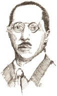

Arnold Schoenberg, dans ritimleri, Rus müzik deyimleri ve klasik bestecilerin bilgeliğinden ilham alan Igor Stravinsky (1882-1971), yenilikçi akımın en yüksek simgesi olagelmiştir. Akıllı, ciddi ve modern, hünerini ciddi şekilde ele alan titiz bir sanatçıydı ve sonuç olarak devrimci olmaktan asla vazgeçmedi.

Stravinky, Rus milliyetçisi besteci Nikolai Rimsky-Korsakov ile tanıştığı ve öğrenim gördüğü St. Petersburg’ta doğdu. 1909’da Stravinsky, Rusya’nın baş bale şefi ve Paris yerleşik Rus Baleleri dans kumpanyası yöneticisi Sergey Diaghilev ile tanıştı. Tüm zamanların en devrimci balelerinin üçünü üretmek için işbirliği yaptılar. İlki, geç romantik dönem renkçiliği ile renklendirilmiş bir peri masalı hikâyesi olan Ateşkuşu’ydu (1910). Sonraki, halk ve hiciv temalarından faydalandığı, bir kuklanın insanı cezbeden, ritmik ve orijinal bir hikâyesi olan Petruşka’ydı (1911). Üç balenin en ürkütücü olanı, Stavrinsky’nin Ateşkuşu’nu bestelerken bir öğleden sonra aklına gelen bir fikre dayandırdığı parça olan İlkbahar Ayini’ydi (1913). Bir grup yaşlı insanın önünde bir bereket tanrısına kendisini, ölümüne dans ederek kurban etmeye zorlanan genç bir kızı hayal etti.
İlkbahar Ayini, bir Doğu Avrupa halk şarkısından alınan melodisi, akıldan çıkmayan, içe işleyen fagot solosu ile başlar ve ilham verdiği şiddetli, ahenksiz ama tümüyle kusursuz talime, Stravinsky’nin hayal ettiği sahne olmasa bile, kesin olarak hastalıklı, karmaşık bir görsele doğru hızla devam eder. Bu eserin ısrarlı ritimleri ve tekrarlı melodik motifleri, yeni bir çağa işaret etti. Stravinsky, sonraları hem yeni klasik hem de on iki tonlu biçimlerde, sürekli olarak sanatını yeni şekillerde geliştirerek çalıştı. 1939’da Stravinsky, Avrupa yaşamından yorularak Amerika Birleşik Devletleri’ne geçti ve İlahiler Senfonisi adlı bir sipariş üzerinde çalışmak için Hollywood’a yerleşti. Sonraki eserleri, Tırmıkların İlerleyişi operasını ve Agon balesini içerir.
EK BİLGİLER:
1. “İlkbahar Ayini” adlı eserin açılışında ıslıklamalar ve yuhalamalar ilk dakikada başladı ve birkaç dakika sonra bir kargaşa, dinleyicilerin birbirini yumruklamasına vardı. Çığlıklar o kadar yüksekti ki dansçılar müziği duyamıyorlardı ve durmak zorunda kaldılar.
2. “İlkbahar Ayini”nin açılışında, besteciler Claude Debussy ve Maurice Ravel de bulunuyorlardı. Debussy kalabalığı sakinleştirmeye çalışırken Ravel, hayranlıkla “Dâhi! Dâhi!” diye bağırıyordu.
3. “Tırmıkların İlerleyişi” operasının son kısmı için olan libretto, şair ve romancı W. H. Auden tarafından yazıldı.